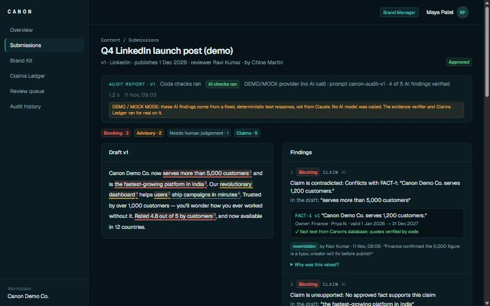
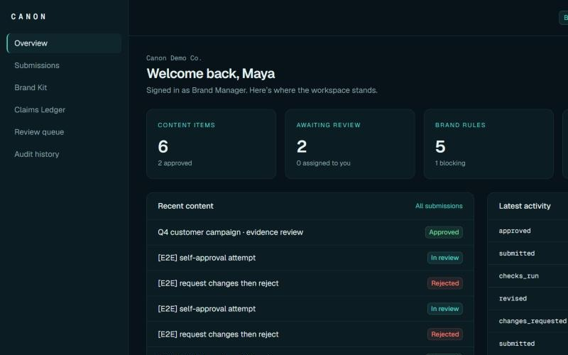
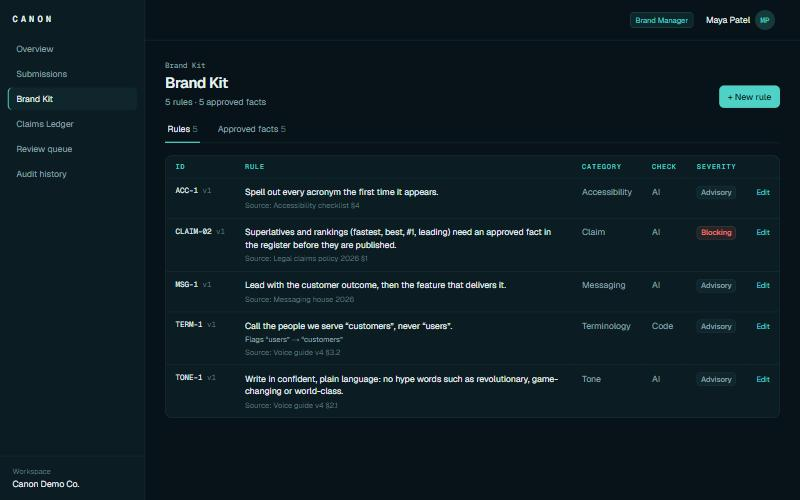
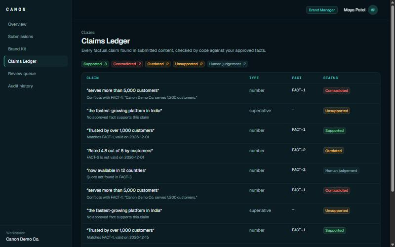
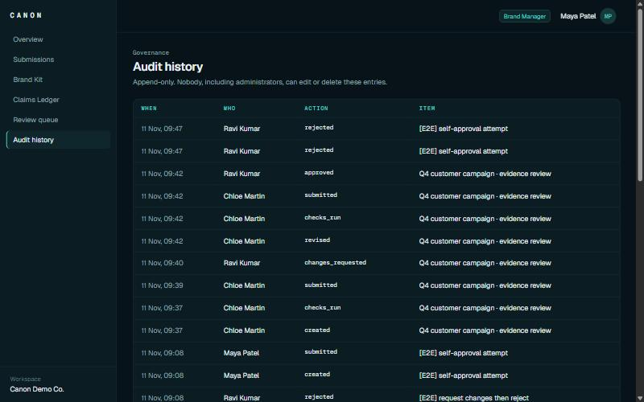

A pre-publication brand-compliance workspace. Every finding cites the guideline or approved fact behind it, code checks that citation before anyone sees it, and a human reviewer makes the final call.
Round 1 was the plan. This document reports what we built in Round 2, what changed from the plan and why, what is not finished, and what comes next.
Canon is built and deployed. A Creator can submit marketing text, Canon checks it against the workspace's Brand Kit, every claim lands in the Claims Ledger with a status decided by code, and a Reviewer approves, requests changes or rejects, with every decision recorded.
CANON_AI_MOCK=1. The AI step returns a fixed, deterministic sample response instead of calling Claude Sonnet. Everything after that step is real: Zod validation, the evidence verifier, the Claims Ledger, findings, review decisions and the audit log. Every report produced this way is labelled DEMO/MOCK. The live Claude Sonnet 5.5 integration is implemented in src/lib/ai.ts but is not switched on in production. Mock output only matches the sample phrases in the demo draft; other text gets code checks and the ledger, not general AI analysis.
| 01 | Original problem and proposed solution | 03 |
| 02 | What Canon actually does | 04 |
| 03 | Implemented features and roles | 05 |
| 04 | System architecture and technology stack | 07 |
| 05 | Core content-to-review workflow | 09 |
| 06 | Changes from the Round 1 proposal | 11 |
| 07 | Current limitations and unfinished features | 12 |
| 08 | Round 3: three substantial improvements | 13 |
| — | Team, evidence and disclosures | 14 |
The real problem is not bad writing. It is that nobody can show, before publishing, that a piece of content matches what the organisation has actually approved.
The Inkloom brief names the consequences: incorrect claims, outdated information, inconsistent language and off-brand content that damages credibility before anyone notices. Our Round 1 proposal broke this into five pains:
These were stated in Round 1 as assumptions to test with users. We have not run those interviews yet (see section 07).
| Principle | Round 2 status |
|---|---|
| No citation, no flag. AI findings must quote a rule or fact; code verifies the quote. | BUILT |
| Rules first, AI second. Deterministic checks run before the model. | PARTIAL banned terms only |
| Claims Ledger. Every claim matched against approved facts with owners and validity dates. | BUILT |
| Humans decide. AI cannot approve; overrides need a recorded reason. | BUILT |
| Guideline Gap Radar. Learn which rules confuse people from dismissed findings. | DEFERRED reasons stored |
| Mixed formats. Text, DOCX, PDF and images. | DEFERRED text only |
A Brand Manager keeps the workspace's rules and approved facts. A Creator submits a draft. Canon produces an audit report in which every issue points to the exact rule or fact it relies on, and a Reviewer decides.

replace → with) the Creator can accept or reject with a reason.Everything below is implemented and running on the live deployment against Supabase.
| Capability | What it does | Where |
|---|---|---|
| Role-based access | Creator, Reviewer and Brand Manager per workspace. Permissions are enforced by Postgres RLS and state-change functions, not only in the UI. | 0001_init.sql 0003_security_hardening.sql |
| Brand Manager dashboard | Content and approvals, items awaiting review, rules (blocking count), facts (expiring and expired), recent content and activity. | app/(app)/page.tsx |
| Content submission | Pasted text with title, channel, audience, one-line goal, planned publish date and an assigned reviewer (never yourself). Revisions create a new version. | submissions/new, [id]/revise-form |
| Brand rules | Rule code, text, category, severity, AI or code check, banned term and replacement, source reference. Editing creates a new version. | brand-kit/rules |
| Approved facts | Fact text, numeric value and tolerance, valid-from and valid-until dates, replaced-by, owner, source. Confidential facts are hidden from Creators and never sent to the AI. | brand-kit/facts 0004_confidential_facts.sql |
| AI-assisted analysis | One structured call per run with a JSON schema restricted to the rule and fact codes sent. Output is validated with Zod and retried once if malformed. Production uses the DEMO/MOCK provider. | lib/ai.ts, lib/ai.mock.ts |
| Deterministic code checks | Whole-word, case-insensitive banned-term matching at exact offsets, with suggested replacement. | lib/codechecks.ts |
| Evidence verification | Four code checks on every AI citation. Failing findings become Needs human judgement and do not block. | lib/verifier.ts |
| Findings and explanations | Cards with cited source, owner and validity, explanation, suggested fix and "Why was this raised?". | submissions/[id]/page.tsx |
| Claims Ledger | Every objective claim gets SUPPORTED, CONTRADICTED, OUTDATED, UNSUPPORTED or HUMAN_JUDGEMENT. Numbers are compared by code. Contradicted, outdated and unsupported claims block approval. | lib/ledger.ts, claims/page.tsx |
| Reviewer workflow | Review queue; override a blocking finding with a reason; approve, request changes or reject. A trigger blocks self-approval and approval while unresolved blocking findings remain. | review/, decide_item, check_approval |
| Audit history | Append-only log of creation, revisions, runs, submissions, overrides and decisions; triggers reject edits. | audit/page.tsx, audit_log |
| Cost and failure guards | Daily workspace token budget (HTTP 429 when used up), reuse of an identical finished run, timeouts and retries, code-checks-only fallback with a note when AI fails. | api/items/[id]/analyze |
| Action | Creator | Reviewer | Brand Manager |
|---|---|---|---|
| Submit, revise and run checks on own content | Yes | Yes | Yes |
| Accept or reject a finding on own content | Yes, reason required to reject | — | — |
| Override a blocking finding | No | Yes, reason required, not on own content | Yes, same conditions |
| Approve, request changes, reject | No | Yes, never own content | Yes, never own content |
| Edit rules and approved facts | No | No | Yes |
| See confidential facts | No | Yes | Yes |
| Add workspace members | No | No | Yes |




Screenshots taken from the live deployment on 11 Nov 2026, signed in as the demo Brand Manager of the fictional "Canon Demo Co." workspace. Items marked [E2E] were created by our end-to-end permission checks.
The browser renders. The Next.js server orchestrates and runs the pure checking code. Postgres holds the data and enforces who may change what.
CANON_AI_MOCK=1 selects the deterministic mock, otherwise the Anthropic client runs when an API key is present, and code checks alone run when neither is set.Managed services for auth, database and hosting, so the team's time went into the product logic: the verifier, the ledger and the permission model.
| Layer | Technology | How Canon uses it |
|---|---|---|
| Framework | Next.js 15 (App Router), React 19, TypeScript | Server-rendered pages, server actions for mutations, middleware for session checks, one API route for analysis. |
| Styling | Tailwind CSS 4 | One shared component file (components/ui.tsx) for cards, badges, tables and empty states. |
| Database | Supabase PostgreSQL | Thirteen tables, four migrations. RLS on every table, SECURITY DEFINER state functions with a fixed search_path, guard and append-only triggers. |
| Authentication | Supabase Auth via @supabase/ssr | Email and password with cookie sessions. One-click demo accounts for judges; their passwords are read on the server and never sent to the browser. |
| API | Next.js route handler | POST /api/items/:id/analyze: validates the id, checks membership through RLS, enforces the daily token budget, runs the pipeline, stores the run. |
| AI provider | Configurable: DEMO/MOCK or Anthropic SDK (Claude Sonnet 5.5) | Structured JSON output restricted to the IDs sent. Production currently runs DEMO/MOCK. |
| Validation | Zod 4 | Model output schema (bounded arrays, enum categories, clamped confidence) and all form and route inputs. |
| Verification | Plain TypeScript, no AI | verifier.ts (citation checks with Unicode normalisation and offset mapping) and ledger.ts (status ladder, number parsing and comparison, validity dates). |
| Testing | Vitest, SQL test script, Node E2E script | Unit tests for verifier, ledger, pipeline, mock, Brand Kit, middleware, actions and the analyze route; live RLS tests when credentials are present; SQL permission tests that roll back. |
| Hosting | Vercel | Production deployment at canon-rose.vercel.app, built from the GitHub repository. |
approvals rejects an approval by the author, by a non-reviewer, or while verified blocking findings are not overridden.audit_log, approvals and finding_decisions reject every update and delete.0003) fixed a function that exposed blocking counts across workspaces; it now returns nothing to non-members.Analysis runs synchronously in one request. A Creator sees the report in about a second in mock mode, fixes what they can, and submits. Nothing reaches approval with an unresolved blocking finding.
| # | Step | What happens | Item status |
|---|---|---|---|
| 1 | Submit | Creator pastes text and sets channel, audience, goal, publish date and reviewer. create_item stores version 1 and refuses the author as reviewer. | draft |
| 2 | Run checks | The route checks membership and budget. If an identical finished run exists for this version, prompt and model, it is reused at no cost. | draft |
| 3 | Analyse | Banned-term checks run in code. The AI client returns findings and claims; Zod validates the shape; the verifier checks each citation; the ledger decides each claim. Unsupported, contradicted and outdated claims become blocking findings that cite the fact (or rule CLAIM-02). | draft |
| 4 | Fix | Creator accepts a suggested fix, rejects it with a reason, or revises the text. A revision creates a new version that needs a fresh run. | draft |
| 5 | Submit for review | submit_for_review requires an assigned reviewer and a finished run on the current version. Results are now frozen. | in review |
| 6 | Review | Reviewer overrides blocking findings with a recorded reason, then approves, requests changes or rejects. The approval trigger refuses self-approval and approval with open blocking findings. | approved · changes requested · rejected |
Every AI finding names a source ID and two quotes. It is shown as verified only if all four pass.
| Check | Passes when |
|---|---|
| ID is current | The cited rule or fact is one of those sent in this request, at its current version. |
| Quote in source | The source quote is an exact substring of the stored rule or fact, after normalisation, and at least 12 characters (or the whole text). |
| Words in draft | The draft quote is an exact substring of this version. Code, not the model, finds the character offsets. |
| Type fits | The finding's category matches the rule's category. A tone finding cannot cite a terminology rule. |
Normalisation: Unicode NFKC, lower case, curly quotes and dashes mapped, whitespace collapsed, with a map back to original offsets so highlights land on the original text.
Each objective claim is decided in this order; the first match wins. Opinions are not ledgered and are left to tone rules.
| Status | When |
|---|---|
| HUMAN_JUDGEMENT | The AI cited an unknown fact, its quote is not in the fact, or code's number comparison disagrees with the AI's label. |
| CONTRADICTED | A fact valid on the publish date makes the claim false. |
| SUPPORTED | A fact valid on the publish date makes the claim true. |
| OUTDATED | The only related facts are expired, not yet valid, or replaced. |
| UNSUPPORTED | No approved fact relates to the claim. |
Numbers are parsed by code ("more than 5,000", "10k", "1.2 million") and compared with the fact's value and tolerance. Validity is checked on the planned publish date, not the day of the check.
| Claim in the draft | Status | Reason recorded by code |
|---|---|---|
| "serves more than 5,000 customers" | CONTRADICTED | Conflicts with FACT-1: "Canon Demo Co. serves 1,200 customers." |
| "Trusted by over 1,000 customers" | SUPPORTED | Matches FACT-1, valid on 2026-12-01 |
| "Rated 4.8 out of 5 by customers" | OUTDATED | FACT-2 is not valid on 2026-12-01 (valid 1 Jul 2025 to 30 Jun 2026) |
| "the fastest-growing platform in India" | UNSUPPORTED | No approved fact supports this claim; cites rule CLAIM-02 |
| "now available in 12 countries" | HUMAN_JUDGEMENT | Quote not found in FACT-3 |
Round 1 planned for a 10 to 14 day build. The actual window was 72 hours (8 to 11 November 2026). We kept the parts that make Canon different, synchronous analysis, deterministic evidence verification and human review, and deferred everything that was not on that path.
| Round 1 plan | Round 2 build | Reason |
|---|---|---|
| Text, DOCX, PDF and image uploads | Pasted text only | Parsing formats adds failure modes before the core check is proven. Text exercises the full verifier and ledger. |
| Two AI calls: Haiku for extraction, Sonnet for claim relations | One Sonnet call returns findings and claims with candidate facts | Halves latency and failure points. Code still decides every status, so a single call loses no control. |
Job table, background runner, SKIP LOCKED queue | Synchronous route handler | One call fits inside a request. A queue would add moving parts with no user benefit at this size. |
| pgvector retrieval of relevant facts | All current non-confidential facts sent | The demo kit has a handful of facts and fits in one prompt. Retrieval becomes necessary at a few hundred facts. |
| Code checks for terms, colour, contrast, alt text, reading level | Banned terms only | Colour, contrast and alt text need images. Banned terms prove the "rules first" path end to end. |
| Asset library, AI import of a PDF style guide | Manual rule and fact entry | Not needed to demonstrate a cited review. |
| Guideline Gap Radar | Reasons stored per rule; no analysis yet | The Radar learns from dismissed findings, so it needs real review data first. |
| Magic-link sign-in | Email and password with one-click demo accounts | Judges must be able to sign in without access to an inbox. |
| Live Claude analysis in the demo | DEMO/MOCK provider in production | The Claude integration is implemented but not enabled in production. The mock keeps the demo repeatable and free of API cost, and every mock report is labelled as such. |
| Python for offline evaluation | Not used | Nothing in the build needed it; the app is TypeScript end to end. |
| Canon Bench measurements | Not run | No benchmark numbers are reported. They remain Round 3 targets. |
We would rather a judge read this page than discover it in the demo.
Each one extends the same principle into new territory: every finding cites its evidence, code verifies the citation, and a human decides.
Check PDF, DOCX and image or creative assets, not only pasted text.
Go beyond the internal register: check claims against trusted external sources and keep the register itself current.
Move Canon from a review step to an ongoing control across where content is written and published.
Round 3 also includes the reliability work Round 2 skipped: switching production to live inference behind the existing budget and fallbacks, and measuring it on Canon Bench before reporting any accuracy figure.
CHRIST (Deemed to be University), Kengeri Campus
| Member | Round 1 role | Area of ownership |
|---|---|---|
| Yoson Y | Frontend and Product Lead | Product interface and user experience: dashboard, Brand Kit, submission, report, ledger, review and audit screens. |
| Raphael Roger A | Backend and Database Engineer | Schema and migrations, authentication, RLS, approval workflow, audit log, deployment. |
| Bryan Donato Anand | AI and Machine Learning Engineer | AI integration and prompt, evidence verifier, Claims Ledger. |
| Macario Andric | QA, Research and Documentation | Tests and end-to-end checks, research plan, documentation and submissions. |
Roles are as agreed in Round 1. Individual contributions are recorded in the repository history.
| Live app | canon-rose.vercel.app/login |
| Repository | github.com/yo5on/Canon |
| Demo sign-in | One click as Brand Manager, Reviewer or Creator of "Canon Demo Co." |
| Unit tests | npm test: 72 passed in 9 files on 11 Nov 2026 |
| Permission tests | supabase/tests/security.sql and scripts/e2e-api.mjs |
| Build plan | docs/ROUND2_PLAN.md, docs/SECURITY_HARDENING.md |